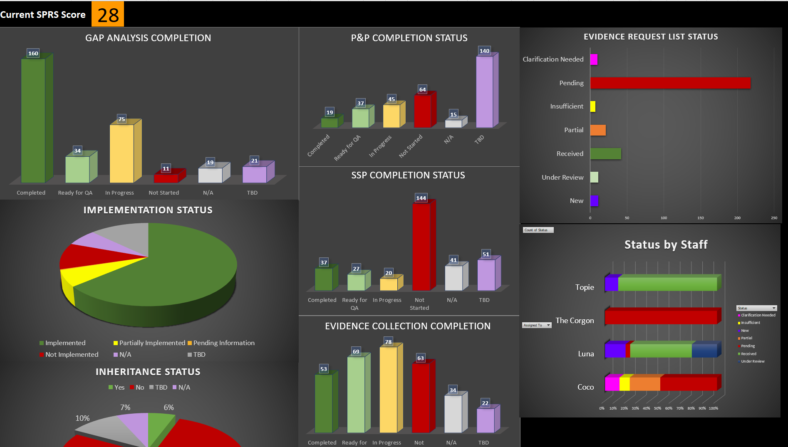

Gap Analysis services for any budget.
One of the best investments in your road to compliance or accreditation is to conduct a gap analysis to identify what still needs to be implemented in your program. Our approach offers a tiered approach based on your organization’s budget.
 What makes our approach different?- Expertise. A cybersecurity gap analysis conducted by our team stands out due to our unparalleled expertise in the field. With our founder's background as a director of FedRAMP advisory consulting at the leading FedRAMP 3PAO, and her impressive track record of crafting FedRAMP accreditation packages for20% of the United States' top 10 cybersecurity companies, we offer a level oof experience that few can match. This expertise enables us to provide clients with a comprehensive understanding of their security posture, including effective boundary identification, secure system architecture, and the identification of alternative implementations. By leveraging our extensive knowledge and insights, our cybersecurity gap analysis empowers organizations to not only identify vulnerabilities but also implement robust strategies for mitigating risks, ensuring that their digital assets remain well-protected in an increasingly complex threat landscape.
- Add-On Services. Adding vulnerability scans or penetration testing to a gap analysis can provide valuable input for more comprehensive frameworks such as FedRAMP or StateRAMP. Conducted by experience experts, these services can help organizations remediate vulnerabilities in advance of official testing, increasing the likelihood that an assessment or audit will be successful.
- Cloud inheritance advice. While the best cloud inheritance matrices come from the vendor or OMB Max Portal, we can offer guidance on likely inheritance statuses during discussions with system administrators when obtaining this information becomes challenging. With our background in understanding cloud inheritances for many of the FedRAMP offerings.
- Customized Compliance Execution Toolkits. Every gap analysis we provide includes a customized toolkit designed to facilitate your resolution of our recommendations. You will be able to filter recommendations by remediation type (documentation update vs. technology change), assign action items to your internal team members, calculate your SPRS score in real time, and track evidence associated with a self-assessment or mock assessment.
| Advice Workshop | Gap Analysis | Comprehensive Gap | |
| Evaluation Workshop | |||
|---|---|---|---|
| Verbal Recommendations | |||
| Basic Tracker | |||
| SPRS or FedRAMP Score | |||
| Comprehensive Tracker | |||
| General Recommendations/ Report | |||
| Comprehensive Recommendation/ Report | |||
| Documentation Review | Optional | Optional | |
| Vulnerability Scanning | Optional | Optional | Optional |
| Penetration Test | Optional | Optional | Optional |
Advice Workshop
The Advice Workshop, our most affordable offering, is a great starting point designed to help organizations seeking certification know how strong their compliance level is. The objective of an advice workshop is transparency; Archstone Security will work collaboratively with key stakeholders to identify any areas of noncompliance based on the information exchange, and will make verbal recommendations on how to resolve them as cost-effectively as possible. This is a great offering for organizations who want to avoid purchasing unnecessary products that promise compliance, or for those needing advice on what acquisitions are necessary for full compliance with the target framework. During the workshop, Archstone will work with the client stakeholders in dialogue using a guided discussion format which is designed to review the organizational structure, the information system in scope for CMMC requirements, and any other concerns that are specific to client’s position. This dialogue will typically address the following topics:- Information system security boundary definition.
- The implementation satisfying each of the controls.
- Information system architecture and design considerations.
- Data types and CUI information categorization.
The Advice Workshop is structured somewhat differently based on the other services selected. As a standalone offering, the session focuses more on verbal recommendations, which will be conveyed throughout the course of the workshop. Participants are invited to record our observations in the provided Compliance Executiion Toolkit, which can be used to track policy or procedure recommendations as well as explicit recommendations on settings.